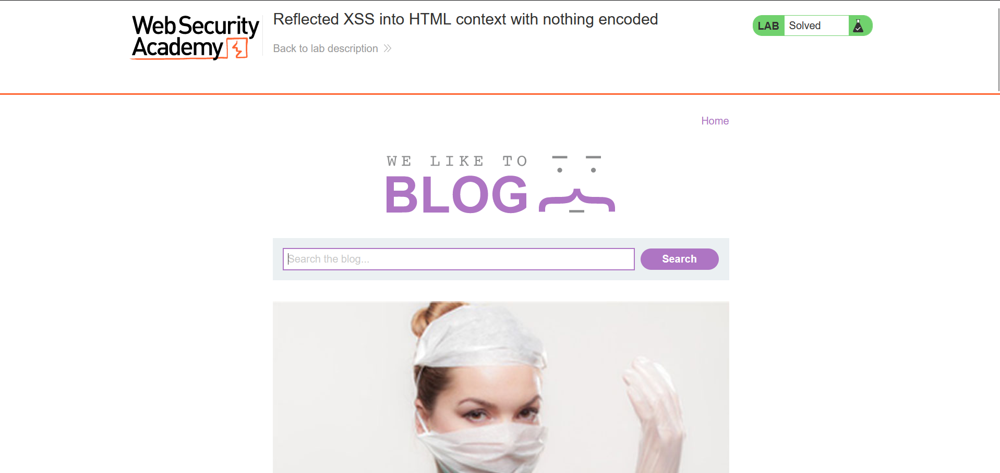
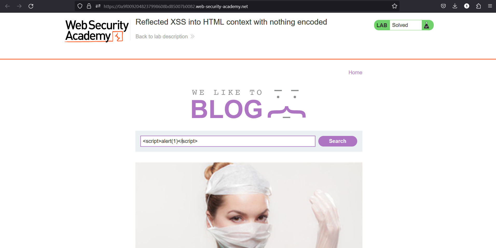
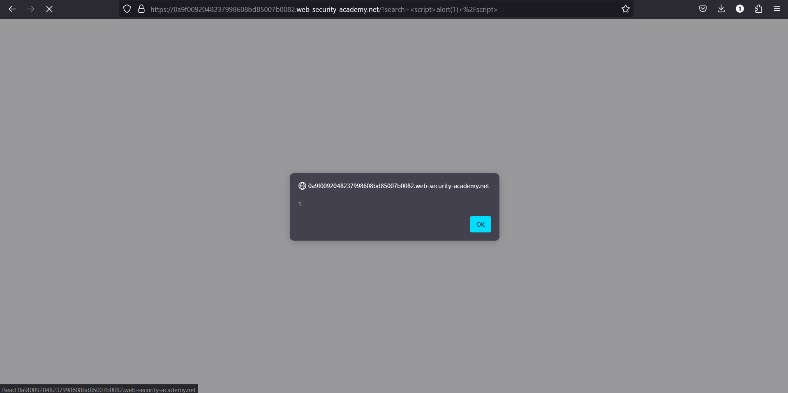
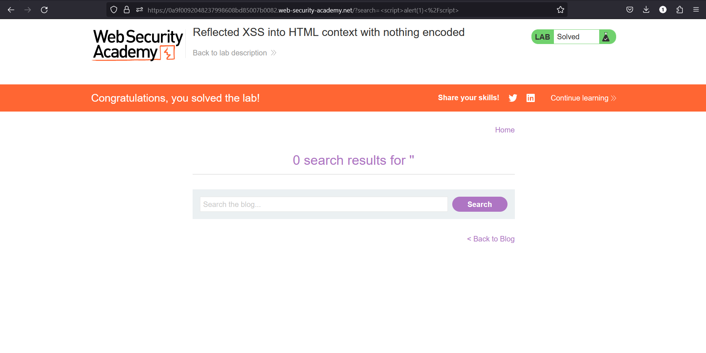

Understanding Cross-Site Scripting (XSS) Vulnerabilities

Introduction to Cross-Site Scripting (XSS)
Among the most prevalent and risky flaws in web applications is cross-site scripting (XSS). When an attacker may include dangerous scripts into web pages that other users are viewing, it is known as XSS. Serious repercussions from this vulnerability include website defacement, session hijacking, and data theft.
How XSS Works and Its Impact
XSS preys on a user's confidence in a certain website. A compromised website allows the injected script to run with the same rights as the user, which could have disastrous results. XSS can cause minor problems like website defacing to serious security breaches like sensitive data theft.

Types of XSS
- Stored XSS: The malicious script is kept on the target server forever, maybe in a database, comment box, or forum post.
- Reflected XSS: The malicious script is reflected off a web server, like in an error message or search result that contains all or part of the input that was submitted to the server.
- DOM-based XSS: Rather of being a server-side vulnerability, it is client-side. The malicious script alters the webpage's Document Object Model (DOM).
Reflected XSS
When user-supplied data from an HTTP request is instantly incorporated in a web application's answer, it's known as reflected XSS, or non-persistent XSS. Search results, error warnings, and any other feature, where user-provided data is mirrored back on the webpage, are popular places to find this kind of XSS.
How Reflected XSS Works
In a Reflected XSS attack, the attacker sends a malicious link to a victim. When the victim clicks on the link, the injected script is reflected off the web server and executed in the victim's browser. This can lead to the attacker stealing cookies, session tokens, or other sensitive data.
Demonstration
Here, I will demonstrate a Reflected XSS attack on a test application:
Using portswigger's test website I will demonstrate how XSS works:  To do this we first will type<script>alert(1)</script> inside the search bar, as shown
below:

If the website is exposed to XSS we will now see a pop up appearing on the website as shown below:

The website will then load with the following in the end, pay attention to the URL:

Potential Causes and Resolution
Inadequate user input sanitization is the main cause of XSS vulnerabilities, which let malicious input to be included into web pages without the necessary validation or encoding. Ensuring tight input validation and permitting only valid data is essential to preventing XSS. Moreover, output encoding might make potentially dangerous characters unimportant. Also useful can be the use of security libraries that have XSS protection features. By limiting how resources—like JavaScript—are loaded and run, a Content Security Policy (CSP) can improve security even more.
Potential Impact of Reflected XSS
Should a website be open to a mirrored XSS attack, the consequences could be anything from a little formatting disruption to a complete identity theft, particularly if the website manages sensitive information. Many documented incidents show that malevolent actors have effectively taken advantage of this kind of attack.
British Airways: An elite hacking organization known for credit card skimming operations, Magecart, targeted British Airways in 2018. The gang took use of an XSS vulnerability in the British Airways website's JavaScript library, Feedify. Attackers changed the software to route client information to a malevolent server that had a British Airways-like domain name. With an SSL certificate on the phony server, customers thought they were making a secure purchase. Before the hack was found, they were able to skim credit cards on 380,000 booking transactions. (Moradov)
In 2019 there was another noteworthy case involving Epic Games, the creator of Fortnite. Researchers discovered that reflected XSS attacks might hit a number of ancient sub-domains. They created links using this weakness that may steal Epic Games and maybe Facebook login credentials through the "sign-in with Facebook" feature. (Leyden)
Such weaknesses can have a hugely negative effect on companies. They might result in losses of money and, more importantly, a steady deterioration of client confidence. People are unwilling to take a chance on a website if they don't believe it can protect their data.
Conclusion
If Cross-Site Scripting (XSS) is not correctly addressed, it can have disastrous consequences. Developers may greatly lower the possibility of XSS attacks their apps by knowing how XSS operates and putting appropriate input validation, output encoding, and security policies in place.
For more detailed information on preventing XSS and other security vulnerabilities, visit the OWASP XSS Prevention Cheat Sheet.